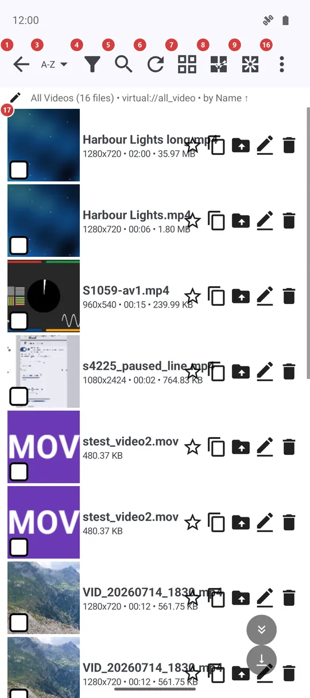
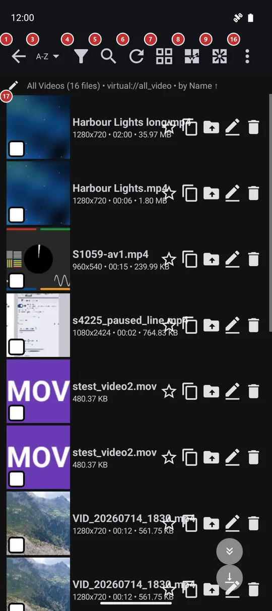

File browser
What this is for
The file browser shows what is inside one resource: its folders and files, as tiles or as a list. Here you find a file, sort and filter the folder, select files and run an action on them, or start playback.


In this order
- Tap a file in the list 17 to open it in the player. Tap a folder to step into it; the folder name 2 then shows where you are, and Back 1 climbs one level up.
- Order the folder with Sort 3, narrow it down with Filter 4, or type a few letters of a name into Search 5. Refresh 6 rescans the folder after files changed outside the app.
- Switch between tiles and a list with 7 when you want more thumbnails or more detail on the screen.
- Press and hold a file to start a selection, or use Select all 8. A bar of actions then appears at the bottom: Copy 18, Move 19, Rename 20, Delete 21, Share 23 and Archive 24.
- Undo 22 takes back the last delete or move for as long as the app still remembers it.
- Play 15 starts the slideshow in the player, and Play random 14 plays the files in a shuffled order.
- Create folder 10, Create text note 11, Create drawing 12 and the microphone 13 add new files right here; anything that did not fit on a narrow screen waits in the menu 16, together with Help.
The elements
Navigation and search
1BackGoes one step back: out of the current folder, and from the top folder to the resource list.
The Back button of the device does the same, so you leave a deep folder one level at a time instead of dropping out of the resource in one tap.
2Current folderShows the folder you are in and lets you jump to any folder above it.
It appears once you step into a subfolder. Tap it to open the list of folders from the resource down to where you are, and tap one of them to go straight there.
3SortShows how the files are ordered and opens the menu to change it.
Pick name, date, size or type; a folder of one kind of file also offers artist, title, duration or the date a photo was taken. Random shuffles the list, and choosing it again shuffles once more. Manual order lets you drag files into your own sequence. The order is remembered for each resource.
4FilterNarrows the list by date, size and media type.
Set a date range, a size range in megabytes or tick the media types you want, then apply. A small number on the button tells how many filters are on, and a line under the bar says which. The filter belongs to this one resource, and Clear filter drops all of it.
5SearchFinds a file by a few letters of its name.
A search box drops into the bar and the list narrows as you type, with no rescan. Close the box to see everything again.
6RefreshRescans the folder for new and changed files.
Use it after copying files in from another app or a computer, or when a network share was offline. Pulling the list down does the same.
7Grid view / list viewSwitches the folder between a grid of thumbnails and a list.
The grid shows a picture tile for every file; the list gives one line per file with more room for text. Your choice is remembered. A resource with music only stays in the list, since there is no picture to show.
Selection and new files
8Select AllSelects every file in the folder.
Handy before Copy, Move or Delete when the whole folder is meant. You can also press and hold a file to begin a selection and tick files one by one.
9Deselect AllClears the selection.
The action bar at the bottom goes away with it. Tapping a ticked box removes just that one file.
10Create FolderAdds a subfolder to the folder you are in.
It works on device folders, network shares and cloud resources alike. The button is hidden on a resource that is read-only.
11Create text noteStarts a new text note in the current folder.
The note is saved only when you save it, and the name is asked for at that moment. The button is hidden on a read-only resource.
12Create drawingOpens a blank page of the drawing editor.
The picture is saved straight into the current folder. The button is hidden on a read-only resource.
13Microphone: record audioRecords a voice note into the current folder.
Press and hold to record and let go to stop; a short tap only reminds you to hold. You are asked for a file name when the recording ends.
Playback and menu
14Play RandomPlays the files in a random order.
The button shows up when the folder holds one kind of media only, such as photos only or music only.
15PlayStarts the slideshow in the player.
It begins at the file you viewed last in this resource, else at the first selected file, else at the top of the list. The player opens in slideshow mode and moves on to the next file by itself.
16More actions: resourceOpens the menu with everything that is not on the bar.
Commands that did not fit on a narrow screen move here, so nothing disappears. The menu also holds the resource actions such as finding duplicates, App settings, and Help, which opens this page; the F1 key opens it too.
Files
17FilesThe files and folders of the resource.
Tap a folder to open it and a file to view or play it. Each row has a star that adds the file to Favorites and four buttons to copy, move, rename or delete just that file; an option in Settings folds the four into a three-dots menu on the row. A swipe left or right runs a quick action that you can choose in Settings. Under each name a second line shows the detail that matters most, such as resolution and date for a photo.
- Undo
- Deleting asks first, and Undo in the action bar brings the files back for as long as the app still remembers the operation.
Actions on the selection
18CopyCopies the selected files to a place you choose.
The destination is picked in a dialog from your destination resources. A long copy can run in the background while you keep browsing.
19MoveMoves the selected files to a place you choose.
Same dialog as Copy. The files leave this folder once the move is done.
20RenameRenames the selected file.
It works on one file at a time and opens a dialog only when exactly one file is selected.
21DeleteDeletes the selected files after you confirm.
It asks you to confirm first. Right after, Undo can bring the files back.
- Undo
- Undo appears in the same bar right after a delete or a move.
22UndoTakes back the last delete or move.
It stays in the bar for as long as the app still remembers the operation.
24ArchivePacks the selected files into one archive.
The button is shown for a resource on this device's own storage.